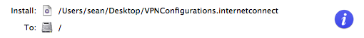
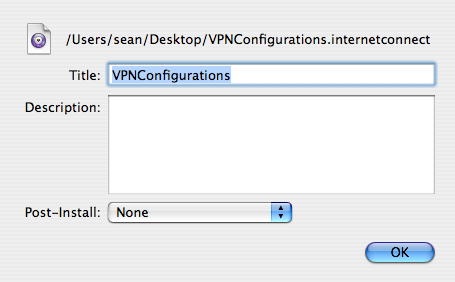

The Contents Pane
This pane prompts you for the payload, the specific items you will be installing, and where each item should be installed. To add items, either drag them to the table or use the +/- buttons. The table contents can be rearranged via drag-n-drop. A package will be created for each row in the table. The assistant makes a best-effort guess at where you might like to install items such as Applications, Fonts, Frameworks, Kernel Extensions, etc. You can of course specify any location you want.
Items can be made relocatable using the checkbox in the “Destination” area. Relocatable items will give the user the opportunity to customize the install location. In addition, applications marked as relocatable will have Locator definitions configured for them.
When multiple items are added, a blue “Information” button will be displayed for each row. Clicking this button allows you to specify some metadata for that item, including the title, description, and post-install action. For a single item, this information is entered in a separate pane, but for multiple items, this is not possible.
 A row with the “Information” button  The Information Sheet